|
Núria
Prims
| ||
 | 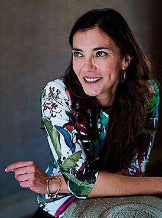 | |
Actriu andreuenca
|
Especialitat:
Idiomes: Currículum: | Actriu
Català, castellà PREMI GAUDÍ '18 a la millor actriu protagonista Cinema, televisió, sèries... |
| 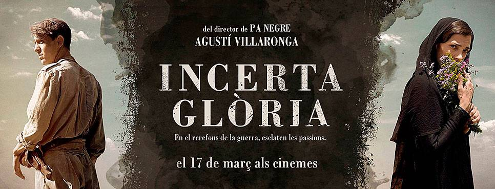 |
 |
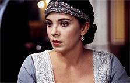 |
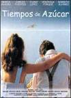 |
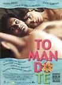 |
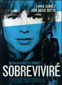 | 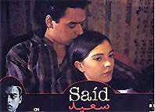 |
 |
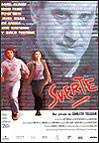 | 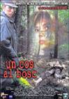 | 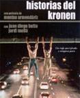 |
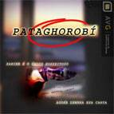 |
 |
CINEMA
:: 2008. “REENCARNACIÓN” de Salomón Shang :: 2004. “INCONSCIENTES” de Joaquim Oristrell :: 2001. “TIEMPOS DE AZÚCAR” de Juan Luis Iborra
:: 2000. “TOMANDO TÉ” de Isabel Gardela :: 1999. “SOBREVIVIRÉ” de Menkes y Albacete :: 1998. “SAÎD” de Llorenç Soler
:: 1998. “LOS AÑOS BÁRBAROS” de Fernando Colomo :: 1997. “SUERTE” d'Ernesto Tellería :: 1997. “SUEÑOS DE SAL” de Gloria Núñez. Curtmetratge
:: 1997. “ANDÉN” de Aníbal García. Curtmetratge :: 1996. “MÁTAME SUAVE” de Jacobo Rispa. Curtmetratge
:: 1996. “EL GUSTO” de Teresa Peregrí :: 1996. “EL DOMINIO DE LOS SENTIDOS” de Teresa Peregrí
:: 1996. “UN COS AL BOSC” de Joaquím Jordà:: 1995. “HISTORIAS DEL KRONEN” de Montxo Armendáriz.
TELEVISIÓ
:: 2007 “RUMORS” d'Óscar Aibar. TV Movie :: 2007 “GÉNESIS. EN LA MENTE DEL ASESINO” dirigida per Javier Quintas. Sèrie. Cuatro Televisión
:: 2007 “EL ESPEJO” dirigida per Álex Sampayo. TV Movie :: 2006 “MUERTE PREMATURA” de José Pinheiro. TV Movie
:: 2006 “LA BIBLIOTECA DE LA IGUANA” d'Antón Dobao. TVMovie :: 2006 “ECOS” d'Oriol Paulo. TVMovie
:: 2005 “PATAGHOROBÍ” de Ricardo Llovo. TVMovie :: 2005 “HOSPITAL CENTRAL” dirigit per Jacobo Rispa. Tele 5
:: 2002-2003 “16 DOBLES”. TV3. Sèrie :: 2000 “LA CAVERNA” d'Eduard Cortés. TV Movie
:: 1996-1998 “NISSAGA DE PODER”. TV3. Sèrie :: 1995 “LA LLOLL”. TV3.
PREMIS
- Prix d'interpretation de la Ville de Montpelier. 22º Festival International de cinema Méditerranée. Montpelier. França. Novembre 2000
- Premio Manzana de Plata. Mejor Actriz en Ópera Prima. The First Festival Latino Americano. Ciner of New York. Le CinemaFe. Febrer 2002
| |
|
|
|
Tornar
webstap@sant-andreu.com